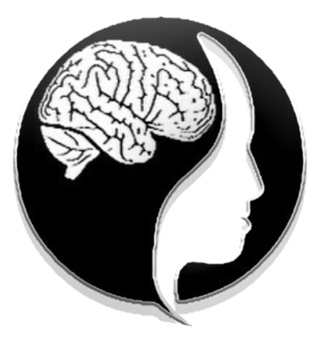

Past Initiatives
Community Engagement
Download the Babson Athletics Mobile app! The Babson Superfan app will enhance fan engagement and allow students to earn rewards for attending games on campus. Beaver fans will also be able to interact on social media, set up notifications for upcoming games and events, and receive scores, news and information, and watch games on their favorite teams all in one place. Babson students will earn five points for attending each home game and need just 45 points to reach the first prize level. Students can start earning points at Tuesday's men's soccer's game against top-ranked Tufts beginning at 3:30 p.m., and the first 50 students checking into the 6 p.m. women's volleyball match versus MIT will receive a Babson foam finger. Other prizes include Beaver athletics gear, a pass to the new BRAC fitness center, a personal fitness package, and a 40-inch smart television at the highest level.
The mobile app is free and can be downloaded on iPhones or Android devices at the AppStore or Google Play stores by searching Babson SuperFan.
Community Service
 Our most recent Community Service Initiative included designing T-Shirts to give to first responders in our community to thank them for the work that they have done during the global pandemic. All of the athletes signed cards and our executive board delivered the presents to various different locations around town and on campus.
Our most recent Community Service Initiative included designing T-Shirts to give to first responders in our community to thank them for the work that they have done during the global pandemic. All of the athletes signed cards and our executive board delivered the presents to various different locations around town and on campus.
Health & Wellness
Our Health & Wellness committee works closely with health services and the Athletic Training staff to create curriculum and programs to help student athletes become the best and healthiest versions of themselves. Some of the initiatives to look out for on campus include Athletic trainer talks, Beaver 2 Beaver which is a support group for injured athletes, and our engagement on social media!
Diversity, Equity & Inclusion
 The three divisional Student-Athlete Advisory Committees and the Board of Governors Student-Athlete Engagement Committee recently collaborated to create a national Unity Pledge and logo, symbolic gestures to continue generating stronger unity among the NCAA's 1,100-plus schools and nearly 500,000 student-athletes. The logo includes three different colored hands holding one another's wrists inside a circle with "United As One" at the bottom. The mark was sent to all NCAA schools in the form of a patch to consider placing on uniforms. The pledge debuted in a video Oct. 23 on the social media pages of the national SAACs. It was also the topic of the 31st episode of the NCAA Social Series, where a SAAC representative from each division discussed the Unity Pledge and its importance.
The three divisional Student-Athlete Advisory Committees and the Board of Governors Student-Athlete Engagement Committee recently collaborated to create a national Unity Pledge and logo, symbolic gestures to continue generating stronger unity among the NCAA's 1,100-plus schools and nearly 500,000 student-athletes. The logo includes three different colored hands holding one another's wrists inside a circle with "United As One" at the bottom. The mark was sent to all NCAA schools in the form of a patch to consider placing on uniforms. The pledge debuted in a video Oct. 23 on the social media pages of the national SAACs. It was also the topic of the 31st episode of the NCAA Social Series, where a SAAC representative from each division discussed the Unity Pledge and its importance.
Special Olympics
 Babson student-athletes, coaches and staff volunteered as announcers, fans, referees, scorekeepers and timekeepers, while Christine Verdolino of Babson Public Safety and members of the Wellesley Police Department volunteered and handed out medals following the games. In addition to action on all three courts inside BRAC, fans and athletes held the American flag at center court while field hockey junior Maddy Paro (Manchester, Conn.) sang the national anthem during the opening ceremonies.
Both days also featured photo opportunities, a hydration and snack station, a press conference area and an athlete village that included poster decorating, pop-a-shot hoops, dance competitions and other games.
"We are extremely appreciative of our relationship with Special Olympics," commented Pamela P. and Brian M. Barefoot Senior Director of Athletics and Athletics Advancement Mike Lynch. "The community games have provided a great experience for our student-athletes and staff as well as all of the Special Olympians. We hope to be able to continue this relationship for years to come."
Babson's relationship with Special Olympics dates back many years, with students completing service-learning projects as part of their academic requirements. As part of the Foundations of Management and Entrepreneurship (FME) course, Babson students chose Special Olympics Massachusetts as one of the organizations in which they donated their time and companies' profits.
Over the years, Special Olympics Massachusetts has worked with Babson Associate Director of Community Service Josh Stevenson. This month, Special Olympics Massachusetts Director of Community Partnerships Andrew MacLeay and Competition Coordinator Marc Tebbetts worked with Babson Student-Athlete Advisory Committee (SAAC) advisor Shannon Torosian to organize the two-day event.
Babson student-athletes, coaches and staff volunteered as announcers, fans, referees, scorekeepers and timekeepers, while Christine Verdolino of Babson Public Safety and members of the Wellesley Police Department volunteered and handed out medals following the games. In addition to action on all three courts inside BRAC, fans and athletes held the American flag at center court while field hockey junior Maddy Paro (Manchester, Conn.) sang the national anthem during the opening ceremonies.
Both days also featured photo opportunities, a hydration and snack station, a press conference area and an athlete village that included poster decorating, pop-a-shot hoops, dance competitions and other games.
"We are extremely appreciative of our relationship with Special Olympics," commented Pamela P. and Brian M. Barefoot Senior Director of Athletics and Athletics Advancement Mike Lynch. "The community games have provided a great experience for our student-athletes and staff as well as all of the Special Olympians. We hope to be able to continue this relationship for years to come."
Babson's relationship with Special Olympics dates back many years, with students completing service-learning projects as part of their academic requirements. As part of the Foundations of Management and Entrepreneurship (FME) course, Babson students chose Special Olympics Massachusetts as one of the organizations in which they donated their time and companies' profits.
Over the years, Special Olympics Massachusetts has worked with Babson Associate Director of Community Service Josh Stevenson. This month, Special Olympics Massachusetts Director of Community Partnerships Andrew MacLeay and Competition Coordinator Marc Tebbetts worked with Babson Student-Athlete Advisory Committee (SAAC) advisor Shannon Torosian to organize the two-day event.
Mental Health

The mental health committee is a new addition to SAAC after the pandemic proved how important mental health resources and education were to the well being of student athletes. The logo above is the MensMental logo, a non profit run by our very own, Teddy Sourlis. The nonprofit shines a light on the topic of mental health and donates to mental health research!